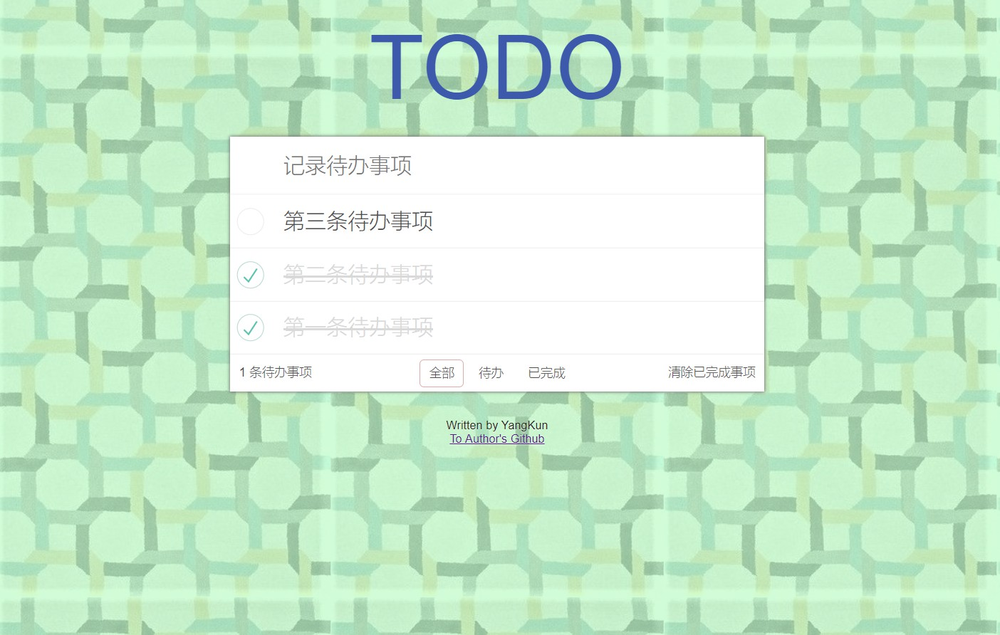

Vue+webpack打造TODO应用
此项目基于慕课网Jokcy老师的Vue+Webpack打造todo应用视频教程编写。
地址：https://github.com/nakuYK/TODO
版本
Vue：2.6.8
webpack：4.29.6
注意
在webpack版本4.0.0以上，某些API发生了更改，所以源码和Jokcy老师的会有所不同。如果你是webpack版本4.0.0以上，可以参考一下我的源码。
简介
此项目首先完成一个前端工程的配置，通过webpack搭建一个完善的vue的workflow，然后基于Vue实现TODO的简单功能，并涵盖了vue的.vue文件以及jsx的开发模式的了解。
使用方法
下载源码
git clone https://github.com/nakuYK/TODO.git
安装npm依赖
npm install
开始项目
进入项目目录
npm run dev
浏览器预览
localhost:8000
预览
